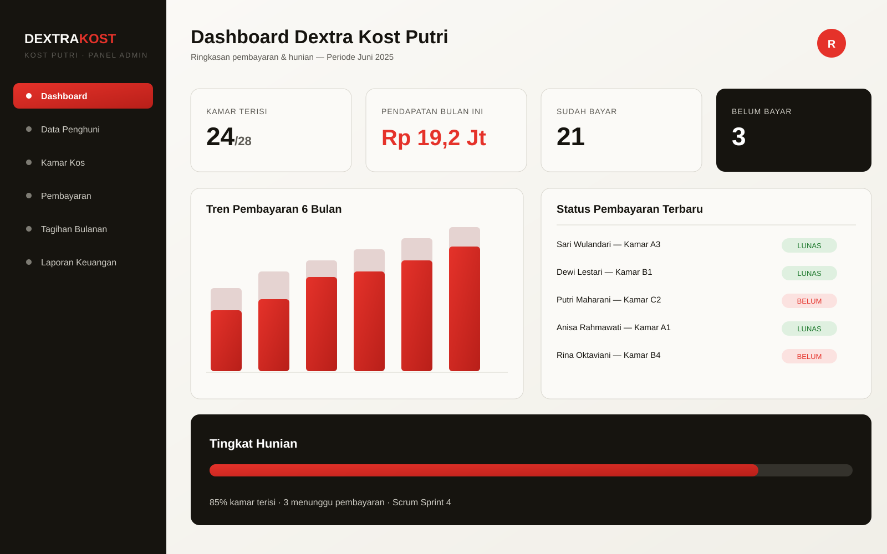
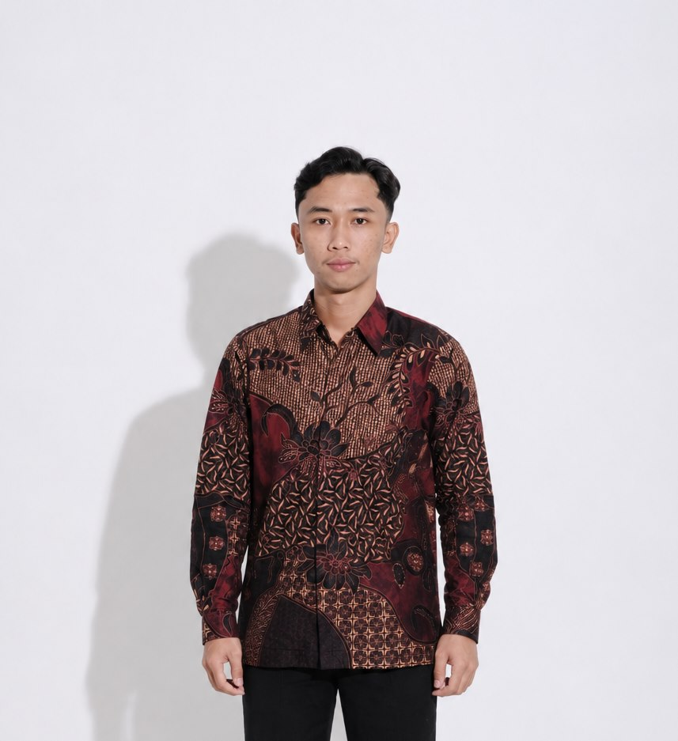
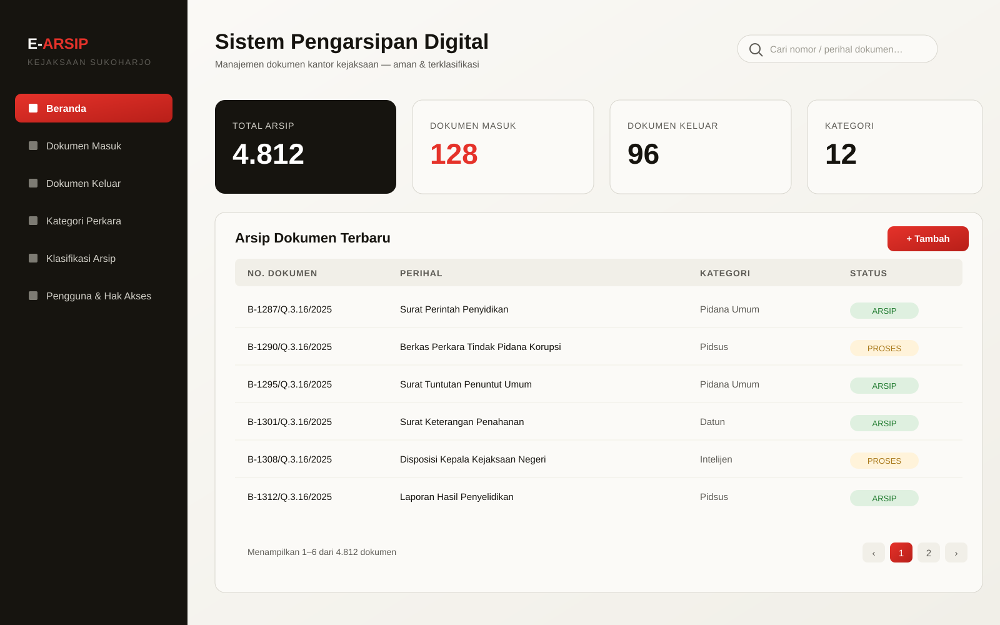

2025 · TUGAS AKHIR
Web Manajemen Kos
Sistem manajemen pembayaran kos berbasis Laravel & Filament, dibangun dengan metode Scrum. Hasil penelitiannya berhasil dipublikasikan ke artikel ilmiah.
★ TERAKREDITASI SINTA 4Full-Stack Web Developer — Laravel & TALL Stack, dengan kaki di dunia IoT dan jaringan.
Kini membangun dan mengembangkan Sistem Finance DEPOS di PT Norxel Teknologi Indonesia. Membiayai kuliah sendiri sambil ngoding. Hasil, bukan alasan.

Saya seorang Software Engineer di PT Norxel Teknologi Indonesia, lulusan S1 Teknik Informatika dengan spesialisasi pengembangan web menggunakan PHP Laravel dan MySQL. Saat ini membangun dan mengembangkan Sistem Finance DEPOS, serta berpengalaman dengan sistem manajemen dan pengarsipan digital memakai TALL Stack (Tailwind, Alpine.js, Laravel, Livewire) dan Filament.
Terampil merancang basis data, mengintegrasikan sistem IoT, dan memahami infrastruktur jaringan. Etos kerja saya terbukti: membiayai seluruh studi secara mandiri lewat pekerjaan paruh waktu sebagai mitra transportasi online, sambil mempertahankan IPK 3.87.

Sistem manajemen pembayaran kos berbasis Laravel & Filament, dibangun dengan metode Scrum. Hasil penelitiannya berhasil dipublikasikan ke artikel ilmiah.
★ TERAKREDITASI SINTA 4
Platform pengarsipan digital untuk mengoptimalkan manajemen dokumen kantor kejaksaan, dengan perancangan database yang aman dan mudah diakses.
Bachelor of Computer Science in Informatics Engineering.
Studi relevan: Rekayasa Perangkat Lunak, Basis Data, Jaringan Komputer, Pemrograman Web.
Tugas Akhir: Implementasi Metode Scrum pada Aplikasi Web Manajemen Pembayaran Kos berbasis Laravel & Filament.
Terbuka untuk peluang sebagai Web Developer. Hubungi saya lewat kanal di bawah.